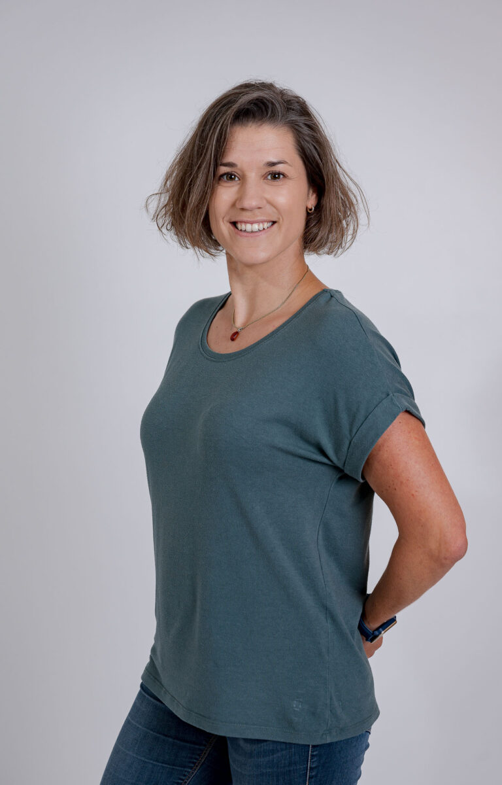

Mein Weg
Physiotherapeutin
aus Leidenschaft
Ich bin Anne Günthner, staatlich geprüfte Physiotherapeutin seit 2012. Nach meiner Ausbildung in Deutschland zog ich 2014 nach Vorarlberg, wo ich seither lebe und arbeite – als freiberufliche Physiotherapeutin und als Mutter.
In meiner Arbeit ist mir vor allem eines wichtig: den Menschen, der zu mir kommt, wirklich zu sehen. Nicht nur das Symptom, nicht nur die Diagnose – sondern den ganzen Menschen mit seiner Geschichte, seinen Bedürfnissen und seinem Alltag.
Mein Ansatz
Physiotherapie ist für mich ein Dialog. Ich erkläre, was ich tue und warum. Ich höre zu und passe meine Behandlungen individuell an – denn kein Körper ist wie der andere.
Mein Ziel ist es nicht nur, akute Beschwerden zu lindern, sondern gemeinsam mit Ihnen langfristige Lösungen zu finden. Ich arbeite mit einfühlsamen Handgriffen, gezielten Übungen und erkläre Ihnen, wie Sie zu Hause aktiv bleiben können.